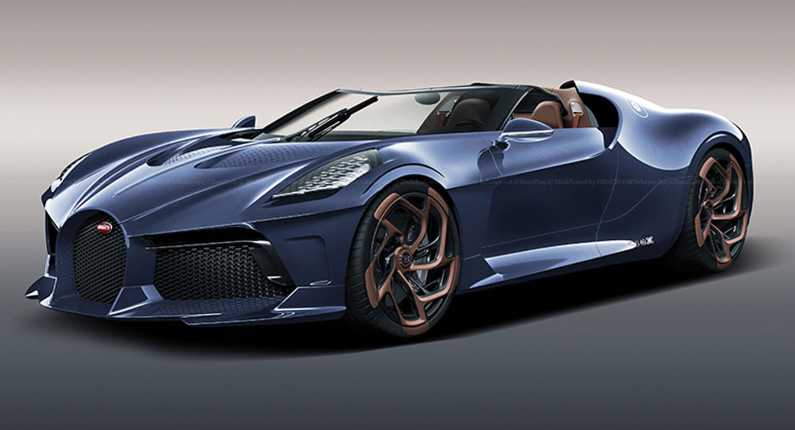

Het begon allemaal in 1909. In dit jaar vestigde Ettore Bugatti zich in Molsheim in duitsland. Hier begon hij als zelfstandige automobielbouwer. Ettore had al veel ervaring opgedaan bij Deutz AG, Mathis en De Dietrich. Zo had hij in de jaren vele auto's gemaakt maar zijn eerste auto was de Bugatti type 10. Bugatti is altijd voor de rijkere geweest. Bugatti is altijd van een van de beste materialen gemaakt en is altijd heel chique in vorm geweest. Maar Bugatti had een keer een erg speciale auto uitgebracht. Dit was de Bugatti Royale Type 41. Die auto woog maarliefst 3000 kg. Deze was gemaakt voor de rijkste van rijkste. En deze auto heeft nu een waarde van maarliefst 8 miljoen euro. Bugatti heeft in het heden meerdere records te pakken. Maar het record waar ze het trotste op zijn is dat ze de snelste auto van de wereld hebben geproduceerd (de bugatti Chiron) deze auto ging maarlieft meer dan 490 km/u. Ook zijn ze nogsteeds hele dure auto's. Je kan nauwelijks een bugatti kopen onder 1 miljoen euro.
